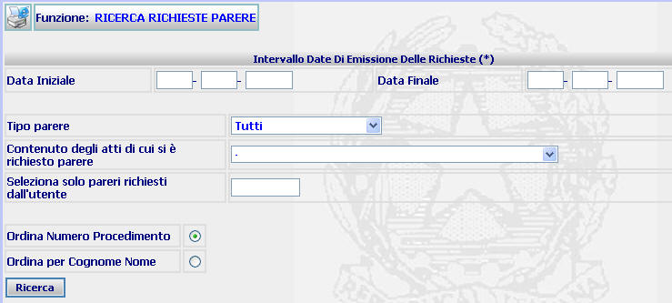

RICERCA RICHIESTA PARERE: La funzione prescelta consente di individuare l'elenco dei pareri richiesti in un determinato lasso temporale e di generare la stampa dell'elenco medesimo.
LE MASCHERE VIDEO
La funzione in esame viene realizzata attraverso l'utilizzo della maschera che segue.

COME FARE PER ...
| Per individuare l'elenco dei pareri richiesti in un determinato lasso temporale, l'utente deve: |
Selezionare l'intervallo temporale al quale la ricerca va limitata;
Selezionare tramite l'apposita tendina il tipo di parere al quale si vuole limitare la ricerca. Se si vuole operare una ricerca di tutti i tipi di parere richiesti, occorre selezionare la voce "Tutti";
Inserire il contenuto degli atti relativamente ai quali si vuole limitare la ricerca. Se si vuole operare una ricerca avente ad oggetto tutti i contenuti, occorre selezionare il valore "-";
Inserire il codice utente dell'operatore che ha effettuato le richieste. Nel caso in cui questo campo non venga compilato, il sistema fornisce l'elenco dei pareri richiesti da tutti gli utenti;
Selezionare l'ordine di presentazione dei pareri richiesti in base all'Anno/Numero SIUS oppure al Cognome/Nome del condannato selezionando il radio button a fianco della relativa voce
Agire sul pulsante
per visualizzare l'elenco dei pareri richiesti nel periodo ...
CAMPI
I dati che consentono di ricercare un atto sono i seguenti:
| NOME | DESCRIZIONE |
| Data iniziale | Compilare i campi con giorno, mese, anno in formato numerico |
| Data finale | Compilare i campi con giorno, mese, anno in formato numerico |
| Tipo parere | Selezionare il tipo di parere al quale si vuole limitare la ricerca attraverso l'apposita tendina |
| Contenuto degli atti di cui si è richiesto il parere | Selezionare il contenuto al quale si vuole limitare la ricerca attraverso l'apposita tendina |
| Seleziona solo pareri richiesti dall'utente | Compilare il campo con il codice utente dell'operatore relativamente al quale si vuole limitare la ricerca |
PULSANTI
E' presente solo il pulsante
 di stampa del contesto (videata)
di stampa del contesto (videata)
BOTTONI
Oltre ai comandi funzionali relativi al menù verticale sono presenti i seguenti comandi:
|
COMANDI |
DESCRIZIONE |
|
|
A fronte di tale comando, il sistema, dopo aver verificato la validità dei dati specificati, ricerca le richieste di parere. |
CONTROLLI
Azionando il bottone di
 , il sistema verifica che i campi
obbligatori siano stati correttamente compilati, presentando in caso contrario il seguente avviso
, il sistema verifica che i campi
obbligatori siano stati correttamente compilati, presentando in caso contrario il seguente avviso